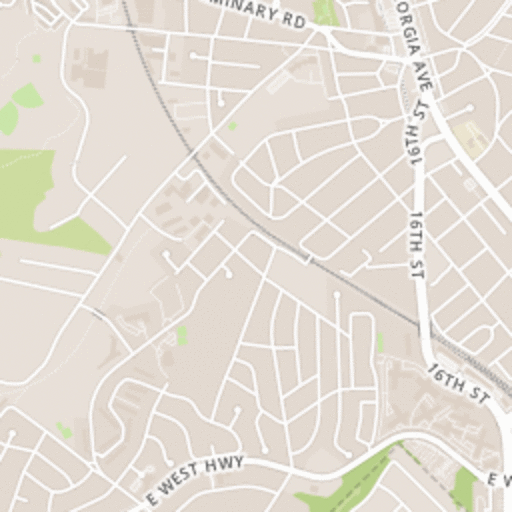
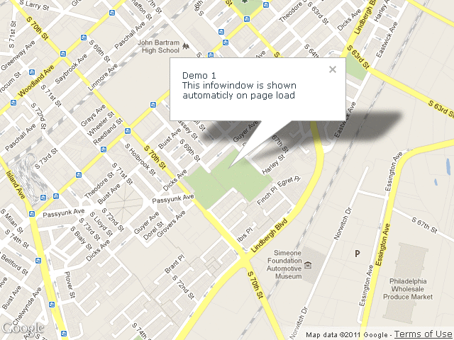
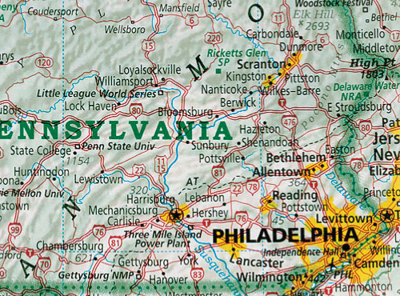
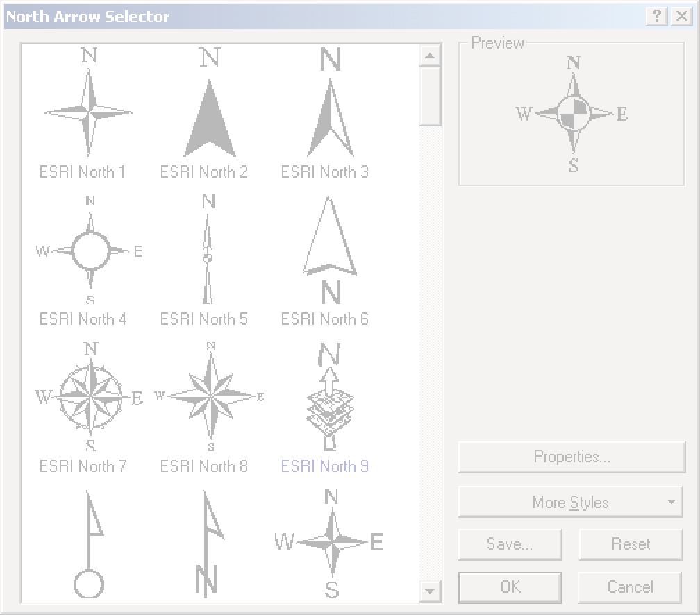
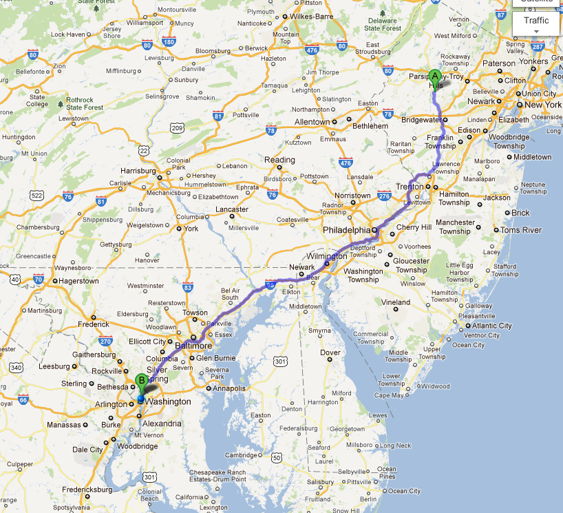
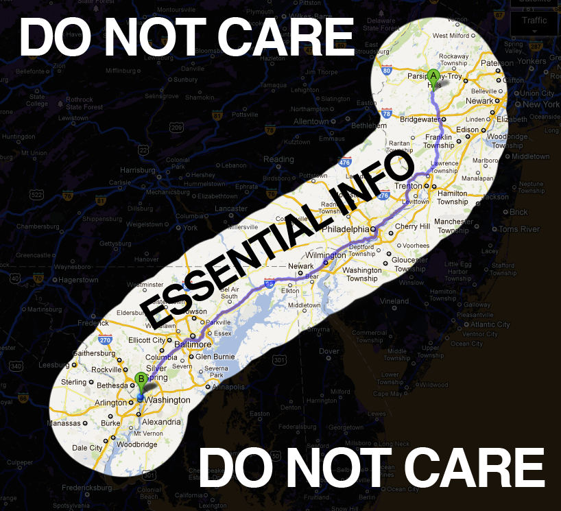
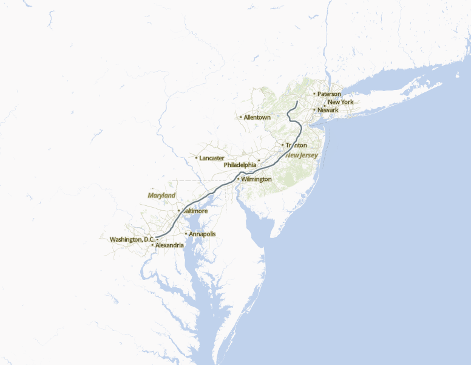
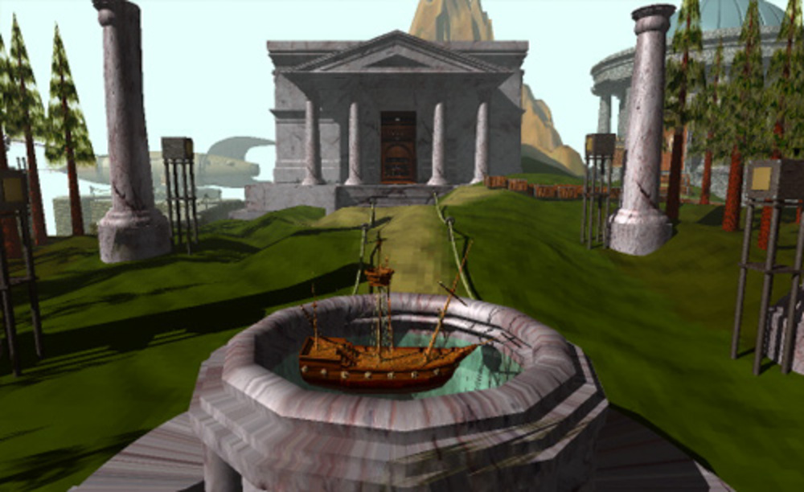
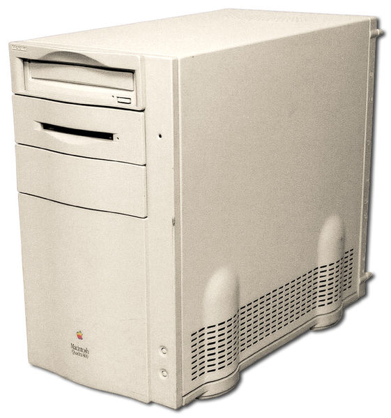

hi
@tmcw
Tom MacWright
 MapBox
MapBoxTileMill
MapBox
MapBox Streets
MapBoxYoung Hahn
Rendering the World
2pm here
"Beyond the Google Maps Paradigm"
In the beginning, there was Google Maps*
*technically there was Where 2 Technologies which was acquired by Google in 2004
Google
begat Google Maps API
Maps API
begat OpenLayers
OpenLayers
begat Leaflet
OpenLayers
begat* Polymaps / Modest Maps *kind of
and the assumptions played on
tiles are tiles 
your map is everyone's map 
you interact with the map by clicking, dragging, and your mousewheel* *except esri

you use maps for driving
<technology changes what we do>
comic sans
2003
2012
2012

"The Greatest Paper Map of the United States You'll Ever See" - Slate
"Documentary series looking at maps in incredible detail to highlight their artistic attributions and reveal the stories that they tell" - BBC

LOOKING AT PAPER
navigation concerns → label concerns
</technology>
<speed>
#1 page reloading
#2 pan and zoom
#3 fps
everyone sees the same map
the viewport is a byproduct
zoom levels are pages
what changes?
 there is so much that doesn't matter
going home: 
going home: 
going home: 
</ speed>
<pretty>
pretty maps are played out


40mhz
with the expressiveness of
PowerPoint
the real revolution is access
what we have now?
LOOKING AT PAPER
"OpenStreetMap proves that
citizens make maps of their surroundings with greater
detail and focus than any company ever could."
-me
"OpenStreetMap proves that
citizens design maps of their surroundings with greater
detail and focus than any company ever could."
-me
"OpenStreetMap proves that
citizens design maps of their surroundings with greater
detail and focus than MapBox ever could."
-me
"GIS Professionals"
GeoNerds
'people who can make maps'

 David Kadavy: ds.io/why-you-hate-comic-sans
David Kadavy: ds.io/why-you-hate-comic-sans